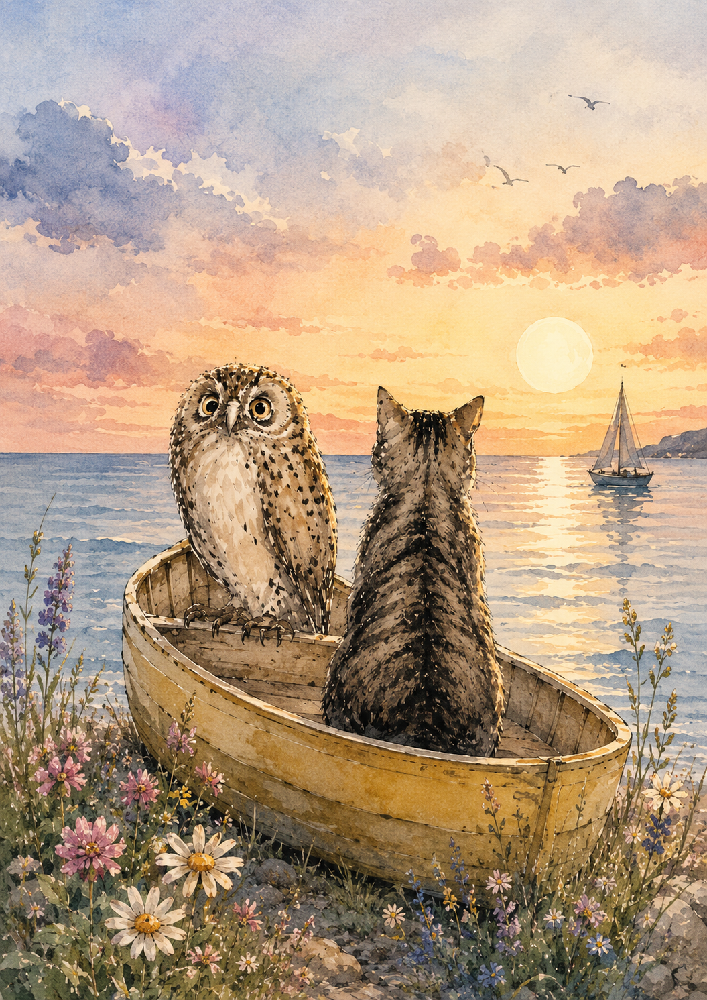

A modern day tale told in the form of a traditional written letter and rhyme.
Inspired by Edward Lear's Children's Poem - The Owl and The Pussy Cat.
Of two different people from different cultures- East and the West, ages and genders and they meet
and form an unlikely connection.
The Owl and the Pussycat Collection
"The Owl and the Pussycat"
"A Japanese Lady of Serenity - A Spark of Hope and Tranquility"
"Love at the speed of light" - "Kōsoku no Koi"
“Quality time spent with you …”
"Not a lover's quarrel"
"The Truth, the whole Truth and nothing but the Truth!"
"Your 'Black Hole' Thinking is Heart-Sinking!"